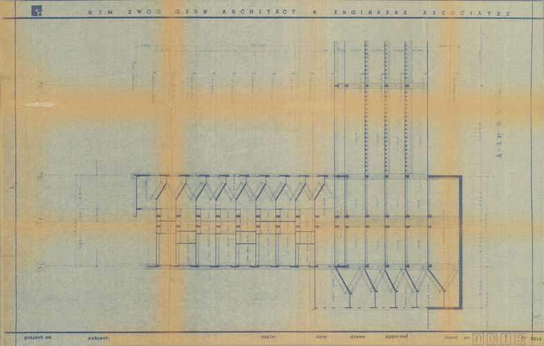
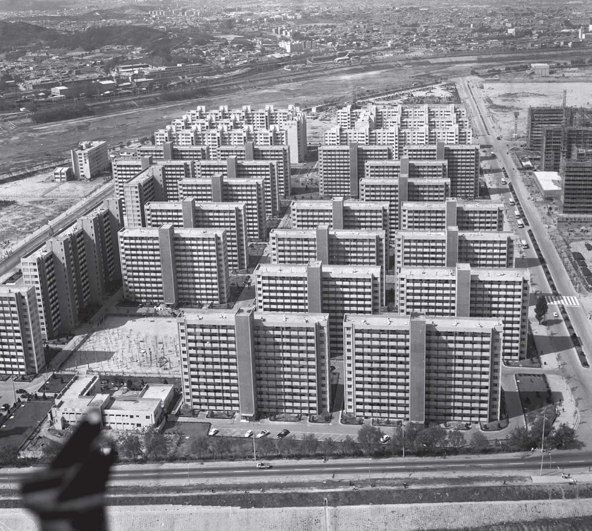

Spectres of the State Avant-Garde
Spectres of the State Avant-garde explores the complex relationship between modern architecture and the state.
How is this exhibition connected to the ‘Freespace’ theme of the 16th International Architecture Exhibition?
If we understand the theme ’free space’ as a variation of public spaces or civic spaces, based on the traditional concept from the West, it is hard to find the foundation of it in Korean cities. It is because when urban spaces in Seoul were reorganized in the 1960s, the spaces did not belong to the citizens. We have to continue taking back those spaces at this time. Thus, we need to keep archiving the system of the 1960s around KECC.
Why does this year’s Korean Pavilion focus on the projects of Kim Soo Keun’s team at the KECC in the late 1960s?
KECC’s or the Kim Soo Keun’s team experimented with their ideals through bold large-scale state-backed projects. It could be seen, as a similar form of visionary architecture and planning that flourished in Europe, the United States and Japan in the 1960s. But the historic background of KECC was different. Theirs had to be very practical to meet the needs of the development plans being carried out by the technocratic military regime.
Links
Guro Industrial Expo

The Symbol Tower of the 1st Korea Trade Fair

Samsung Hall at the 1st Korea Trade Fair

Citizens visiting the 1st Korea Trade Fair, 1968
“
The Guro Industrial Exposition signaled the beginning of a new era of affluence.
”

The slogan of the 1st Korea Trade Fair: Forum for Prosperity of Tomorrow

Sewoon Arcade
“
The Sewoon Arcades heralded the wave of urban renewal projects.
”
Pedestrian deck of Sewoon Sangga, 1967
A roof-raising ceremony for Sewoon Sangga, 1967
Dilapidated Sewoon Sangga and its vicinity, 1980-1990s

KECC, a cross section of Sewoon Sangga, 1967
Pavillion for Osaka Expo 1970
A performance of the National Day of Korea at Expo ’70
A Sketch for the Korean Pavilion for Expo ’70
“
The Expo Pavilion for Osaka Expo 1970 was a venue for showcasing Korea as a nation-state on the world stage.
”
View of Expo ’70 Korean Pavilion
A model of the Expo ’70 Korean Pavilion, 1970
Yeouido
“
The utopian master plan for Yeouido symbolized the brilliant future promised by the economic development plans.
”
A cross section of Yeouido development zone, 1968
KECC’s “Premise and Hypothesis for Yeouido Master Plan,” Space 19 (April 1969)

Aerial view of Yeouido Sibeom Apartment Complex, 1975

Fantastic City: A documentary film
by artist Hyun Suk Seo